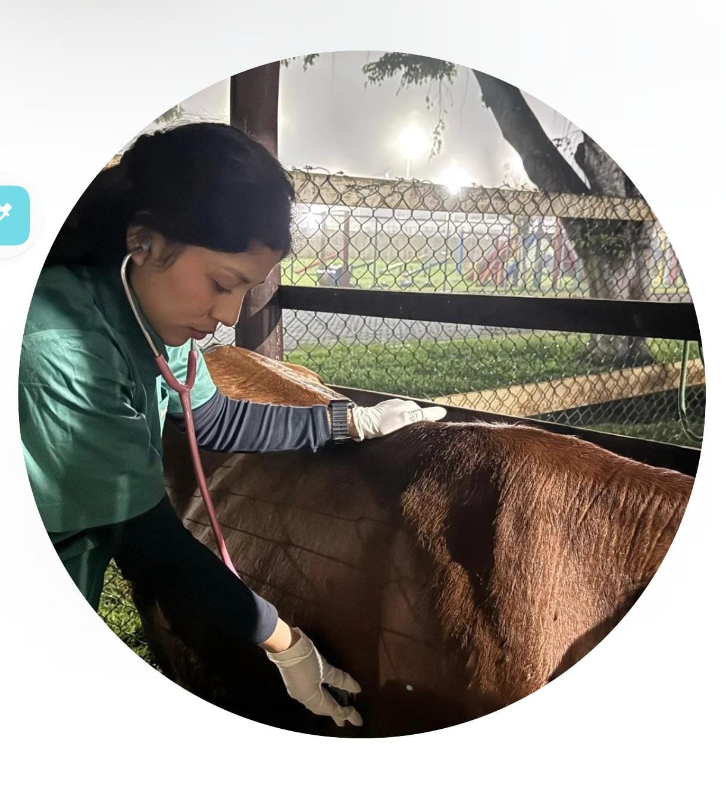

Consultas clínicas
Avaliação completa, escuta cuidadosa e acompanhamento responsável da saúde do pet.
Atendimento veterinário com olhar humano, acompanhamento responsável e compromisso real com o bem-estar do seu pet em cada etapa do cuidado.

Prevenção, diagnóstico e acompanhamento dedicado.
A Dra. Xiomara Montoya atua com medicina veterinária voltada ao cuidado integral dos animais, unindo conhecimento técnico, acompanhamento próximo e uma postura profissional que transmite segurança aos tutores.
Seu trabalho é pensado para oferecer atendimento atento, diagnóstico responsável e orientação clara, valorizando tanto a saúde do pet quanto a confiança de quem o acompanha.
Uma presença profissional mais elegante, moderna e confiável para apresentar a atuação veterinária com clareza.
Comunicação acolhedora, atenção ao tutor e compromisso com prevenção, rotina clínica e bem-estar animal.
Uma seção mais refinada para valorizar a apresentação profissional da médica veterinária e transmitir mais confiança logo no primeiro contato.
Avaliação completa, escuta cuidadosa e acompanhamento responsável da saúde do pet.
Protocolos preventivos modernos para proteger o animal e trazer mais tranquilidade ao tutor.
Investigação clínica precisa com orientação clara sobre os próximos passos do tratamento.
Use esta seção para direcionar tutores ao WhatsApp, apresentar seus canais de atendimento e facilitar o primeiro contato com mais elegância.